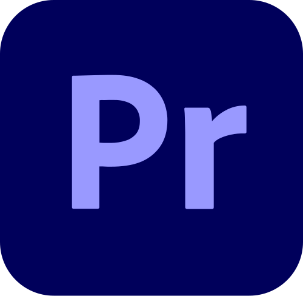
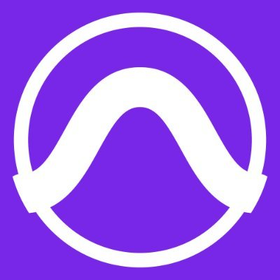
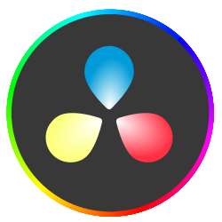
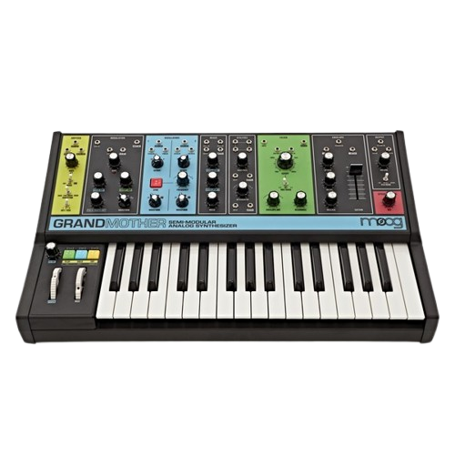
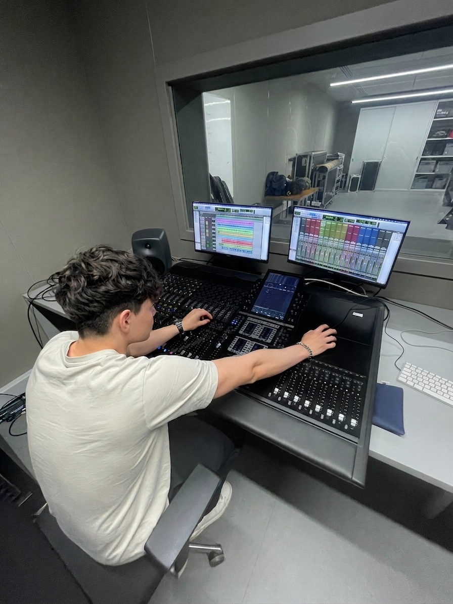
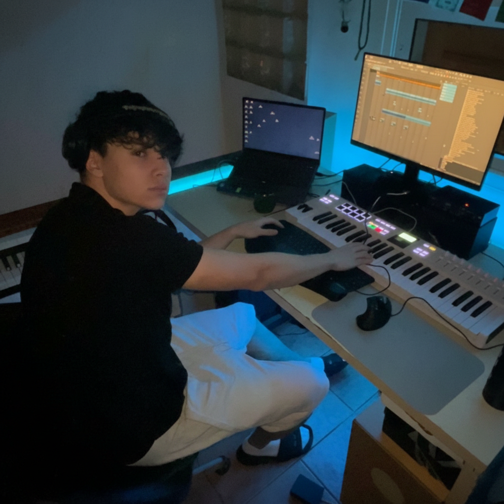
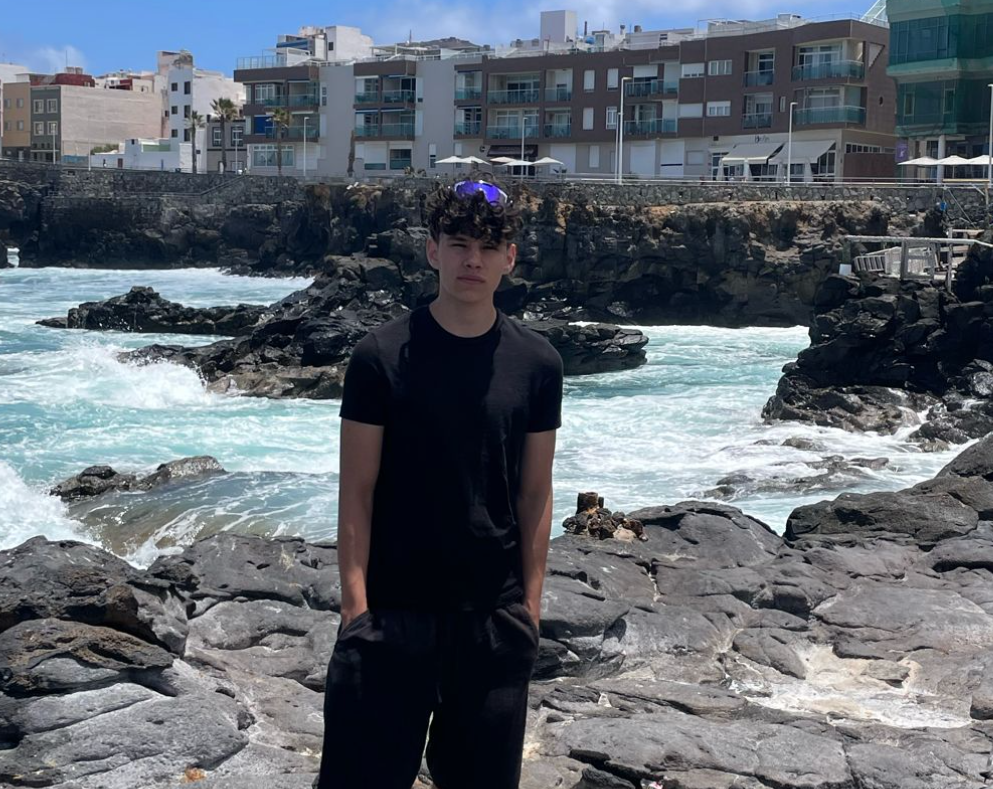

1. Comprensión avanzada del ruteo de señal tanto en entornos analógicos (patchbays, consolas) como digitales.
2. Capacidad para el montaje, conexionado y mantenimiento básico de sistemas de audio en estudio y directo.
3. Selección y colocación estratégica de microfonía según la fuente sonora (voces, acústicos, amplificadores) y la acústica de la sala.
4. Manejo de Pro Tools (edición, gestión de sesiones y ruteo interno) y Ableton Live & FL Studio para producción creativa y composición de ideas.
 Ableton Live
Ableton Live
 After Effects
After Effects
 Adobe Audition
Adobe Audition
 Photoshop
Photoshop

Premiere Pro
Pro Tools
DaVinci Resolve
Synth Hardware
Graduado en Bachiller Tecnológico, con honores en trabajo de investigación “La Imperfección en la Producción musical”
Mi enfoque nace de una formación musical académica de Violín en conservatorio, evolucionando hacia una carrera activa como producer/beatmaker

Aficionado a la música y sonido, esta dualidad me permite entender el audio desde la física y la ingeniería, pero también desde la psicología del artista en el estudio.

SOBRE MI
- Valentin Tumialan Lusardi
Link a conferencia gencat
Soy estudiante de 1º de sonido en la EMAV, donde actualmente profesionalizo mi base técnica en flujo de señal, microfonía y diseño de instalaciones.
Link a proyecto personal
Link a pagina de proyecto
Lee trabajo de investigación
CONTACTO